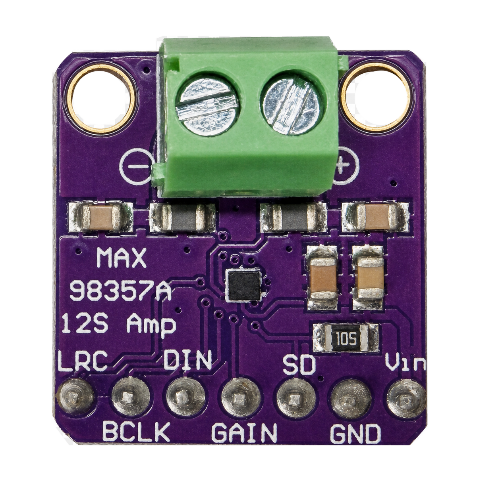

Explore
Quiz
Score:
0
/
0
Hover over a numbered marker or a label to learn about that part of the board.
Try Again
Edit Mode — drag markers to calibrate positions
Drag a marker to see its live coordinates.
Copy JSON